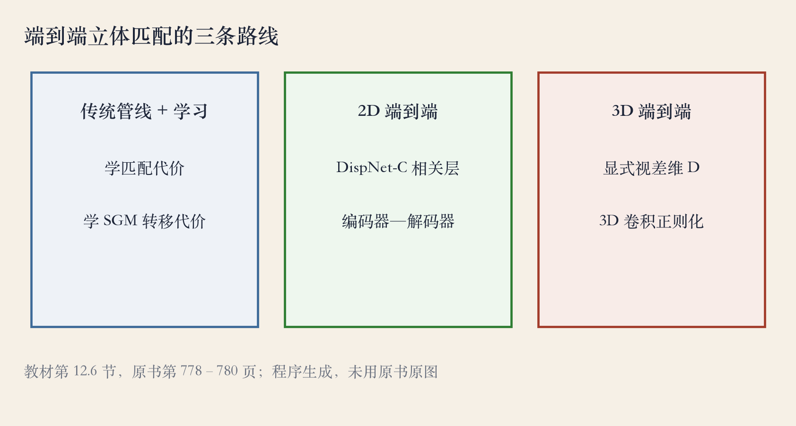
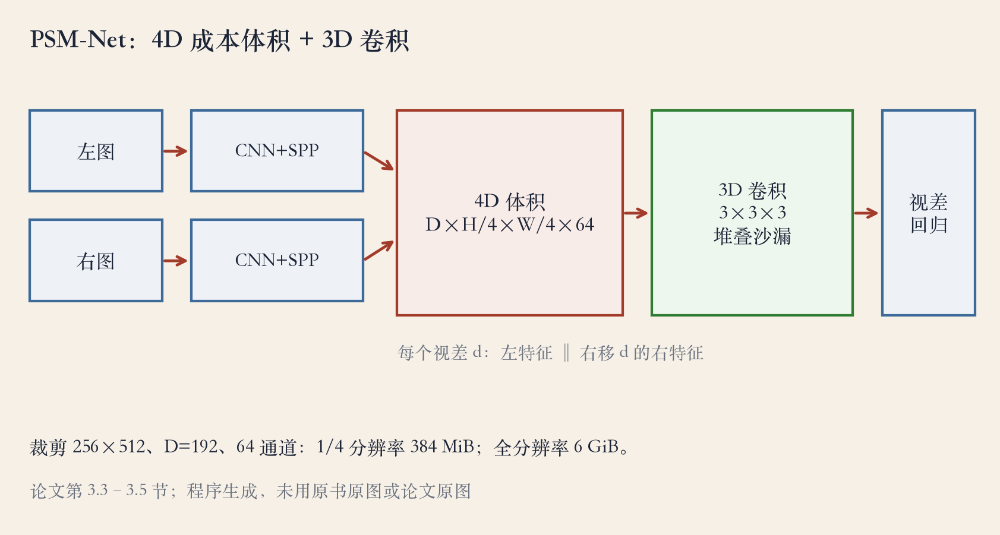
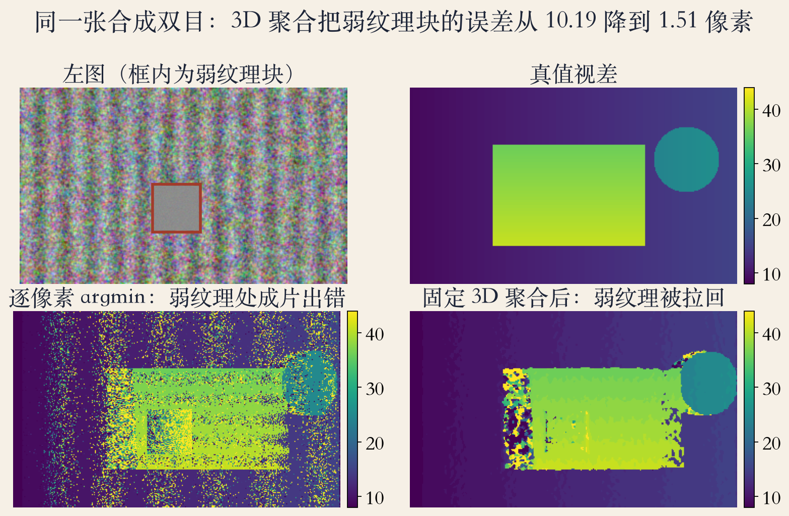

第 12 章 · 深度立体匹配
PSM-Net：从手工到端到端
深度网络和端到端学习改变了立体匹配。
教材把方法分成三类。
本集重点讲第三类：三维端到端。
PSM-Net 把特征堆成带视差维的体积。
依据：原书第 778–779 页
三类路线
在传统管线里学一环
二维网络端到端
三维网络端到端
正课第一百零六集
01 / 12
三类路线 · 分类
三条路线：只学一环、二维、三维
第一类只替换传统管线里的一环。
第二类输入左右图，直接输出整幅视差。
第三类显式保留视差维。
越往右越吃数据和算力，内存也更大。
依据：原书第 778–780 页

端到端立体匹配的三条路线：传统管线加学习 / 二维端到端 / 三维端到端｜程序生成，未用教材或论文原图
正课第一百零六集
02 / 12
路线一 · 管线内学习
路线一：只换管线中的一环
2016 年，兹邦塔尔和勒昆第一次用学习做匹配代价。
他们用训练出来的特征优化成对匹配代价。
SGM-Net 用卷积网络调整 SGM 的转移代价。
学到的匹配代价至今仍用于 Middlebury。
依据：原书第 779 页
这类方法的特点
不改传统管线
只换某一环
聚合和后处理仍手工
正课第一百零六集
03 / 12
路线二 · DispNet-C
路线二：二维端到端
最早的二维端到端模型是 DispNet-C。
它用相关层计算左右图像层的相似度。
编码器解码器把整幅图压小再放大。
旧网络缺少利用上下文的手段。
依据：原书第 779 页；PSM-Net 论文第 1 页
难在哪
遮挡、重复纹理
无纹理、反光区域
需要更大范围的区域支持
正课第一百零六集
04 / 12
PSM-Net · 总览
PSM-Net：SPP 加四维体积
左右图各自过 CNN 和 SPP。
得到四分之一分辨率的特征。
按视差 d 拼出四维体积。
再用三维卷积做正则化。
依据：PSM-Net 论文第 1、4 页

PSM-Net 结构：SPP → 四维体积 → 三维卷积｜程序生成，未用教材或论文原图
正课第一百零六集
05 / 12
SPP · 多尺度
SPP：四个尺度的上下文
SPP 用四个固定尺寸的平均池化块。
尺寸分别是 64、32、16、8。
再经过 1×1 卷积和上采样拼回。
小尺度看细节，大尺度看布局。
依据：PSM-Net 论文第 4 页
它改变了什么
不改变分辨率
改变每个位置能看到多大范围
比单纯堆卷积省算力
正课第一百零六集
06 / 12
内存 · 四维体积
代价：一张体积 384 兆字节
论文裁剪 256×512，特征图 64×128。
视差 192，左右各 32 通道拼成 64 通道。
一个体积约 384 兆字节。
不下采样，单张就是 6 吉字节，正好 16 倍。
依据：PSM-Net 论文第 4 页；原书第 780 页
再乘批量
训练批量 12 张
光体积 4.5 吉字节
还没算特征图和梯度
正课第一百零六集
07 / 12
三维卷积 · 正则化
三维卷积：沙漏反复压体积
基础版有十二层 3×3×3 卷积。
堆叠沙漏版有三个沙漏，各输出一张视差图。
三维卷积参数量约三倍。
三个输出都加损失，做中间监督。
依据：PSM-Net 论文第 4 页
两种版本
基础版只堆残差块
沙漏先下采样再上采样
基础版适合消融，沙漏更贵
正课第一百零六集
08 / 12
视差回归 · 结果
回归：softmax 加权求和
不用分类，而是做视差回归。
对每个视差算 softmax 概率。
再把视差按概率加权求和。
分类只能选整数，回归能出连续值。
依据：PSM-Net 论文第 5–6 页
训练与结果
平滑 L1 损失
三个沙漏输出加权求和
KITTI 2015 验证 1.83%，测试 2.32%
正课第一百零六集
09 / 12
实验实测 · 320×192
沙盘：弱纹理被拉回
合成 320×192 的双目图。
弱纹理块有 1936 个有效像素。
逐像素取最小，弱纹理块成片出错。
加固定三维聚合后，基本被拉回。
依据：本集实验

合成双目沙盘：真值视差 / 逐像素取最小 / 固定三维聚合；弱纹理块 10.19 到 1.51 像素｜程序生成，未用教材或论文原图
正课第一百零六集
10 / 12
实验实测 · 对照
对照：固定核不等于学会
总体误差从 7.43 降到 4.16 像素。
弱纹理从 10.19 降到 1.51。
九成位数从 26.18 降到 23.58。
二维聚合总体 3.96、弱纹理 0.27，反而更好。
依据：本集实验
其他对照
边界误差 9.59 到 9.37
全局 softmax 12.71
局部 softmax 4.09，整数取最小 4.16
正课第一百零六集
11 / 12
开放挑战 · 泛化
边界：泛化与分辨率
有专门训练集的基准上，深度方法领先。
跨域泛化仍不好。
两个开放挑战：跨域泛化和高分辨率。
Middlebury 上深度方法仍然缺席。
依据：原书第 781 页
工程取舍
四维体积随视差线性增长
按分辨率、视差范围、算力取舍
训练域外性能会掉
正课第一百零六集
12 / 12